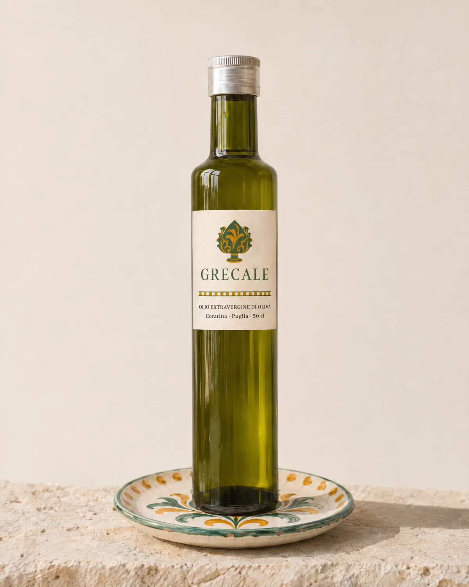
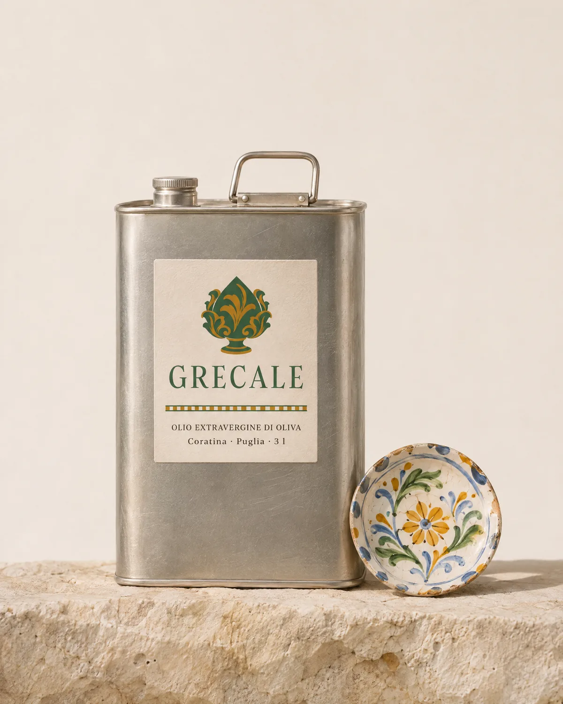

Olio extravergine di oliva, Puglia
Il vento
da nord-est,
l’olio nuovo.
Coratina in purezza, amara e piccante come deve essere, estratta a freddo sotto i 27 °C.
Acquista da 18 €Scorri

L’olio
Amaro,
poi pizzica.
La coratina prende il nome da Corato, in Puglia: dà un olio ricco di polifenoli, con amaro e piccante decisi.
Il pizzico in gola dell’olio appena franto si deve all’oleocantale.
Ai panel d’assaggio l’olio si versa in un bicchiere scuro: chi assaggia non deve vederne il colore.
Il nome
Due facce,
un vento.
Il grecale soffia da nord-est. Sopra, la foglia d’ulivo è verde-grigia; sotto è quasi argentata, coperta di minuscoli peli a forma di scudo che la proteggono dai raggi UV-B.




Raccolta 2026
Grecale
Olio extravergine di oliva da sola coratina. Estratto a freddo, cioè sotto i 27 °C.
Conservalo al riparo da luce e calore: il vetro scuro e la latta lo proteggono dalla luce.
Ricette
A crudo
-

Frisa
Pane biscottato pugliese: si bagna in acqua e si condisce con pomodoro e olio extravergine.
-

Fave e cicorie
Purea di fave secche con cicorie selvatiche lessate, e olio extravergine sopra.
-

Pane e olio
Una fetta di pane di grano duro e un filo d’olio appena franto.
Dove trovarlo
Qui sul sito, con spedizione in tutta Italia.
Nelle botteghe e nei ristoranti che lo scelgono: se hai un locale e vuoi assaggiarlo, scrivici.
Scrivici